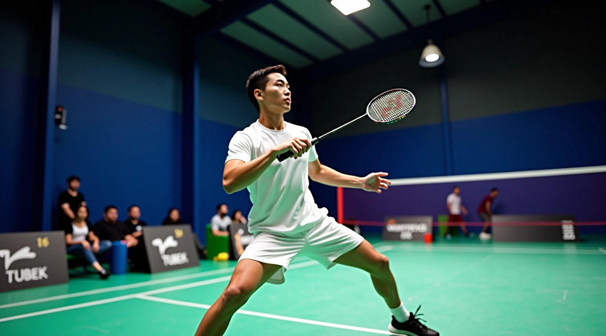
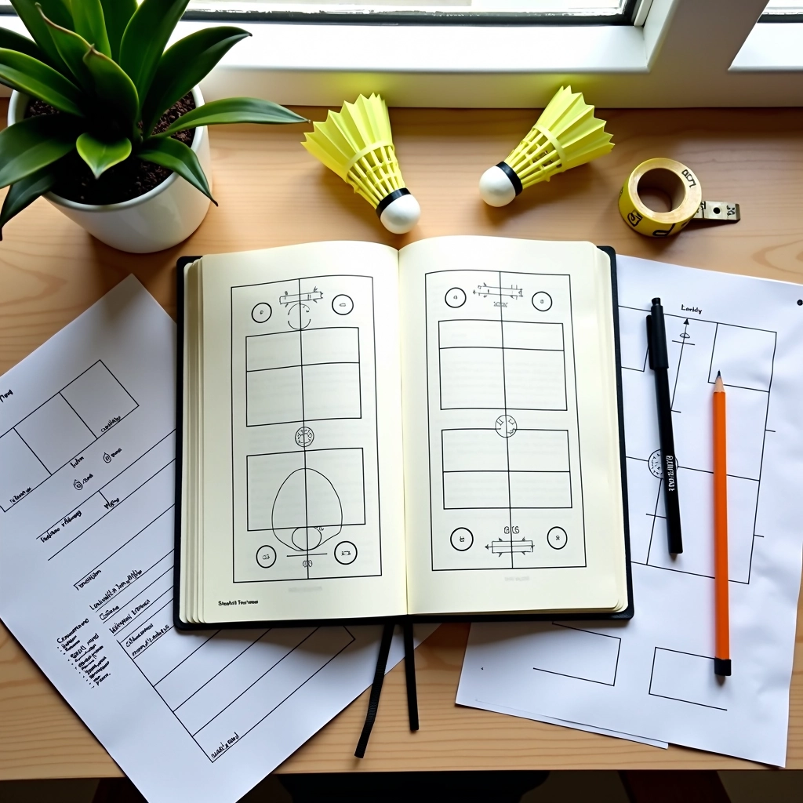
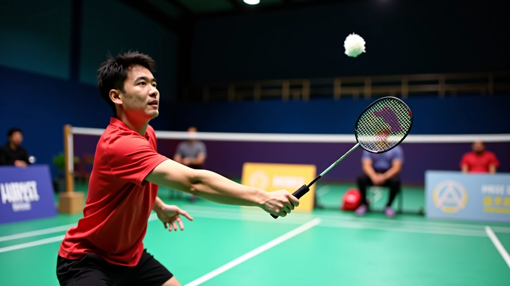
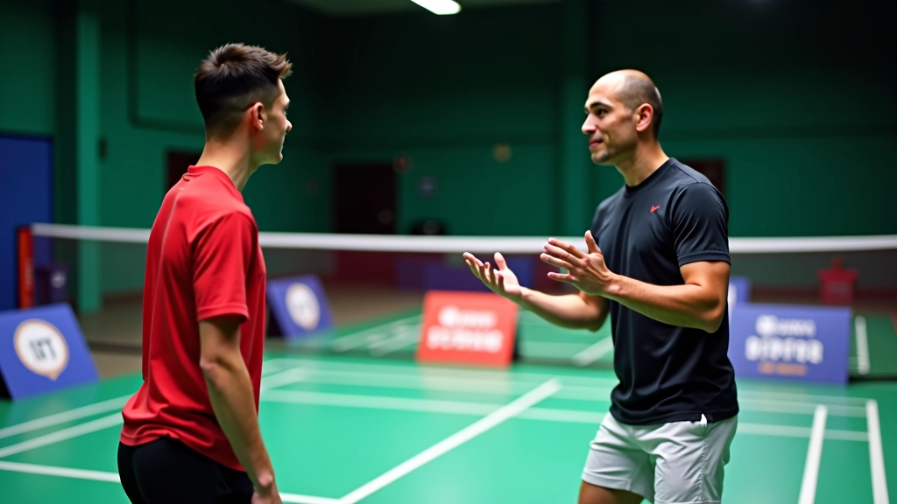

أساسيات الإسقاط العرضي للمبتدئين
تعلم المبادئ الأساسية لتقنية الإسقاط العرضي من الصفر، مع التركيز على وضعية القدم والمعصم والتوازن الصحيح.
تطوير مهاراتك من خلال التدريب المباشر مع شريك محترف، مع تقنيات التغذية الراجعة الفعالة والتصحيح المستمر


كتبه
فريق التحرير والمراجعة
متخصصون في تقديم شروحات عملية وسهلة التطبيق لتمارين الريشة الطائرة
التدريب المزدوج ليس مجرد تمرين عادي. عندما تتدرب مع شريك، تحصل على تغذية راجعة فورية حول أدائك. الشريك يرى الأخطاء التي لا تشعر بها أنت — زاوية المضرب، توقيت الحركة، اتجاه الكرة. هذه الملاحظات الحقيقية تُحدث فرقًا كبيرًا.
التدريب الجيد مع الشريك يتطلب خطة واضحة. ليس مجرد ضرب الكرات ذهابًا وإيابًا. نحن هنا لنعطيك تمارين مُنظمة تطور المهارة بشكل حقيقي وملموس.
تمارين مُجربة وفعالة لتحسين الإسقاط العرضي مع شريكك
ابدأ من منتصف الملعب — أنت وشريكك متقابلان على بُعد 4 أمتار. اضرب إسقاط عرضي ناعم باتجاه الزاوية اليمنى. شريكك يتحرك بسرعة، يصل للكرة، ويعيدها برفع عالي نسبيًا. أنت تكرر الإسقاط.
هذا التمرين يركز على ثلاث نقاط: دقة الموضع، سرعة التحرك، والتكرار. مدة التمرين 10 دقائق متواصلة. عندما تشعر بالراحة مع اليمين، انتقل إلى الجهة اليسرى.
النقطة الحساسة هنا — الشريك يجب أن يعود دائمًا للمركز بين كل ضربة. لا تترك الكرة تسقط عشوائيًا. كل حركة بقصد.

نصيحة مهمة: الإسقاط الجيد يجب أن يهبط بالقرب من الشبكة جدًا — حوالي 30 سم. إذا كانت الكرة تهبط بعيدًا عن الشبكة، فالشريك سيصل إليها بسهولة ويهاجمك. اضرب بحنان أكثر.
الشريك الجيد ليس فقط من يضرب الكرات. الشريك الذي يساعدك على التطور هو من يلاحظ التفاصيل الصغيرة ويخبرك عنها بصراحة.
لاحظ هذه النقاط أثناء تصحيح شريكك:
بعد كل مجموعة من التمارين، توقفوا للحظات. تحدثا عن ما رأيتموه. "الإسقاط الأخير كان أفضل لأن..." أو "حاول أن تضرب أعلى قليلًا في المرة القادمة." هذه المحادثات هي التي تُحسّن الأداء بسرعة.
تعمق أكثر في مهارات الإسقاط العرضي

تعلم المبادئ الأساسية لتقنية الإسقاط العرضي من الصفر، مع التركيز على وضعية القدم والمعصم والتوازن الصحيح.

تطوير مهاراتك إلى المستوى المتقدم مع تقنيات الإسقاط العرضي الخادعة والمتغيرات المختلفة والاستراتيجيات.

تحديد وتصحيح الأخطاء الشائعة التي يرتكبها اللاعبون عند أداء الإسقاط العرضي، مع حلول عملية سهلة التطبيق.
المعلومات الواردة في هذا الدليل مخصصة للأغراض التعليمية والمعلوماتية فقط. نحن نقدم نصائح وتقنيات عملية بناءً على خبرة الفريق المتخصص. كل لاعب يتمتع بمستويات بدنية واحتياجات تدريبية مختلفة. إذا كنت تعاني من إصابة أو قلق صحي، يُنصح باستشارة مدرب معتمد أو متخصص طبي قبل البدء بأي برنامج تدريبي جديد. التطور في الرياضة يتطلب وقتًا والتزامًا — لا تتسرع في النتائج.
التمارين التي شرحناها ليست معقدة. لكنها فعالة جدًا. الإسقاط العرضي يتحسن مع التكرار والملاحظة الدقيقة. عندما تتدرب مع شريك ملتزم، تحصل على عين ثانية تلاحظ ما تفتقده أنت.
ابدأ بالتمرين الأول — الإسقاط من المركز. كرره لمدة 10 دقائق. لاحظ الفرق. ثم أضف التمارين الأخرى تدريجيًا. التطور سيأتي بثبات، لا بسرعة. هذا هو الطريق الصحيح.